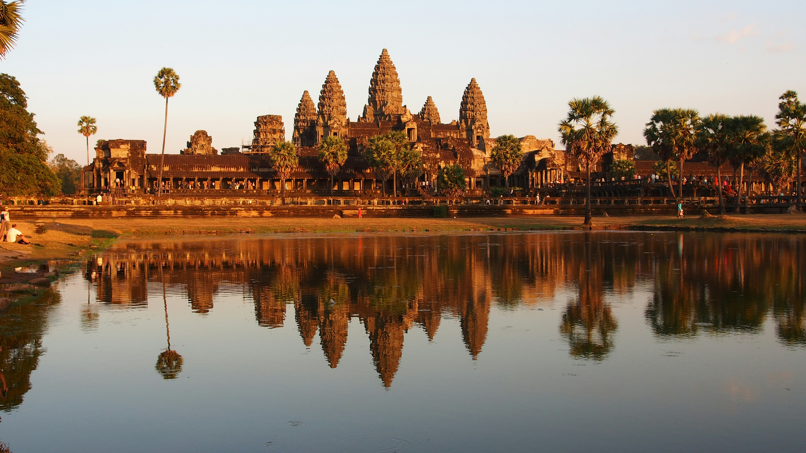
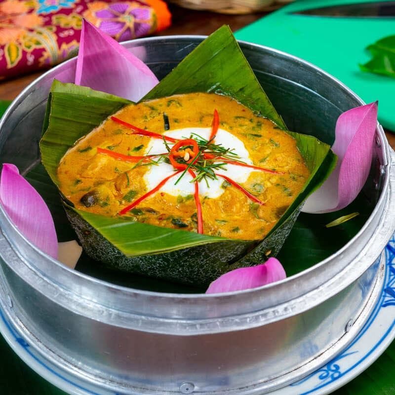
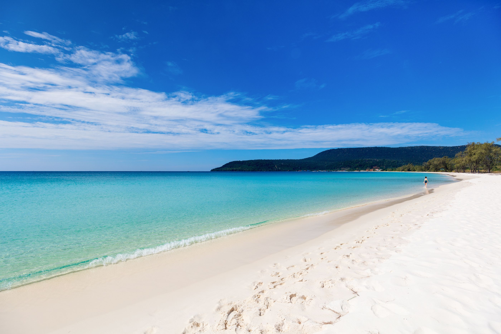
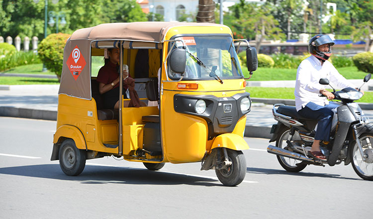

Kamsan Cambodia
Cambodia in one calm, visual guide.
Beautiful places, Khmer food, and useful tips without the overload.
Ancient heritage
Khmer cuisine
Island escapes
Featured Video
Watch Cambodia in motion
A short cinematic look at landscapes, temples, and local life.
Open on YouTubeFeature Collection
Pick a mood, then start your trip
Each section includes a visual preview and a quick path to dive deeper.




Start Planning
Need quick practical advice?
Open the travel guide for transport, weather, and smooth first-day tips.